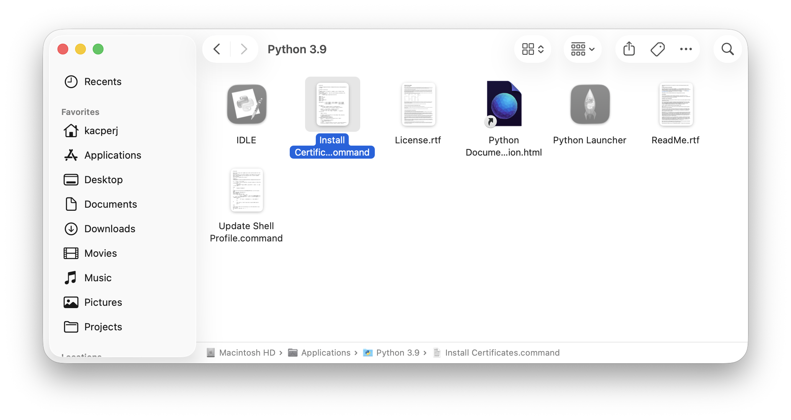

Getting Started
This page walks you through getting HLPatcher downloaded and running on your Mac for the first time.
Step 1: Download HLPatcher
Go to the GitHub Releases page and download the latest release archive.
Once downloaded, unzip the archive to a location of your choice (e.g. your Desktop or Downloads folder).
Step 2: Install Xcode Command Line Tools
HLPatcher builds native 64-bit engine binaries from source. This requires the Xcode Command Line Tools to be installed.
Open Terminal and run:
A system prompt will appear asking you to confirm the installation. Click Install and wait for it to finish.
Step 3: Install Python Certificates
Open your Applications folder and find the Python 3.9 folder. Inside, double-click the Install Certificates.command script to run it. This is required to verify SSL certificates later on during patching.

Step 4: Run HLPatcher
In Terminal, navigate to the folder where you unzipped HLPatcher, then run:
The patcher.sh bootstrap script will automatically verify prerequisites, set up a Python virtual environment, install dependencies, and launch HLPatcher.
Tip
You only need to run chmod +x ./patcher.sh once. On subsequent runs, just use ./patcher.sh.
Step 5: Follow the UI
Once HLPatcher opens, it will guide you through the rest of the process:
- Select your games folder – point HLPatcher to your Steam
commonfolder (pre-filled automatically if using the default Steam path). - Select games to patch – unpatched games are pre-selected. You'll see live estimates for time and disk space.
- Choose patching options – select Latest or Stable engine builds and whether to create a backup.
- Switch Steam branches (Source Engine games only) – if you're patching Half-Life 2, Portal or similar games, HLPatcher will ask you to switch them to their legacy Steam branch before continuing.
- Wait for patching to complete – a progress bar will track each component as it's being patched.
Note
After patching, macOS may block SDL2.framework on first launch. If this happens, go to System Settings, then Privacy & Security and click Open Anyway.
Once done, close HLPatcher and launch your games from Steam as usual.